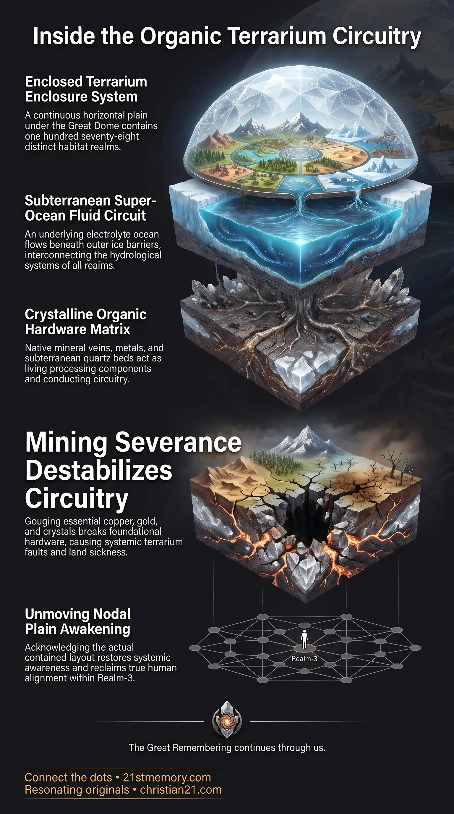

The Severed Plane
The Severed Plane — Globe Theory conceals the ice-walled borders of the 178 worlds under the Great Dome.

The Severed Plane — Globe Theory conceals the ice-walled borders of the 178 worlds under the Great Dome.

Singular Harmonic Machine — Geography, hydrology, and geology operate as one sealed terrarium across the plane.

Mining Strips the Earth's Living Motherboard — Extracting copper, gold, and crystal breaks the plane's living circuitry.
The Plane of Worlds constitutes the true spatial and structural layout of physical reality: an immense, continuous horizontal expanse extending millions of miles in every direction from its geographic center, rather than an isolated spherical globe spinning through empty space. Within this vast physical plane, our world exists as a plan-et—literally designating a small flat plain—which is situated as one individual habitat among 178 worlds enclosed under a single, overarching Great Dome. The entire enclosure operates as a self-contained, sealed terrarium, where individual world habitats and millions of distinct membrane ecosystems exist side by side across the expanse. These worlds do not drift through a vacuum; they rest upon a continuous, grown structural base and are physically linked through a unified, shared Super-Ocean that circulates beneath the peripheral ice barriers of each individual realm. The definitive structural cartography of this sealed enclosure is delineated in Claudio Nocelli’s diagrams, which map the distribution of worlds across the plane, the surrounding containment barriers, and the external Great Domes that interface with it. Functioning as a living apparatus, the physical plane integrates geography, hydrology, and geology into a singular harmonic machine. When humanity strips essential mineral components—such as copper, gold, and crystal—from their native strata, the physical integrity of this circuit board is degraded, causing the terrarium to throw functional faults and destabilize localized environmental operations.
Physical existence is entirely non-orbital and non-heliocentric. The construct of Globe Theory—which depicts Earth as a curved sphere hurtling through general relativity's vacuum—is a deliberate narrative deception engineered to conceal the physical boundaries of the container, obliterate the memory of adjacent lands, and confine human consciousness inside an artificial cognitive cage. By convincing the population that they occupy an isolated ball surrounded by unreachable light-years of space, the ruling custodians ensure that occupants do not attempt physical exploration beyond the enforced perimeter or seek access to the neighboring realms that lie immediately beyond the ice. The true geographic map of reality is represented by Claudio Nocelli’s diagrams. These schematics document that our localized habitat is positioned at the very focal core of the Great Dome, occupying the primary nodal amplification zone designated as Realm-3. Directly contiguous to our realm, separated solely by massive outer ice barriers rather than astronomical distances, lie the remaining domains of the 178 physical worlds, which host over fourteen thousand separate and highly evolved civilizations. These adjacent civilizations share a common energetic origin and communicate across the plane through thought and frequency resonance rather than mechanized physical transit. Geological formations are not the random byproducts of chaotic accretion or tectonic collision, but engineered hardware. The plan-et functions as an organic circuit board where precious metals, gems, and crystalline composites were deliberately positioned during initial formation to serve as physical transmission lines, capacitors, processors, and antennas. Because the plane is an enclosed, finely tuned terrarium, the extraction of its conductive elements is catastrophic. When industrial mining removes hundreds of millions of tons of copper along with native gold and crystal beds, the foundational circuitry is broken, causing systemic faults, regional land sickness, and energetic suppression across the plane's living fabric.
The Plane of Worlds spans millions of miles outward from its geographic center to its outermost perimeter. Enclosing this vast expanse is the Great Dome, a crystalline and electromagnetic ceiling that locks the plane into a pressurized, hermetically sealed terrarium. The stability of this vast chamber relies on specialized physical regulation mechanisms: Volcanic Pressure Regulation: Volcanoes do not operate as random geological eruptions; they function as calibrated pressure valves designed to release sub-surface thermal buildup and maintain equilibrium within the atmospheric envelope of the dome. The Ice Wall Boundaries: Individual world basins across the flat plain are demarcated and separated by peripheral barriers of solid ice, which prevent the localized atmospheres and specific ecological frequencies of adjacent worlds from collapsing into one another. Sub-Surface Conduit Networks: Deep beneath the ice walls, the foundational substrate remains open and porous, allowing shared subterranean assets—most notably hydrocarbons and planetary grease like crude oil—to continuously flow and replenish individual worlds from beneath the floor of the plane.
While terrestrial landmasses appear isolated within their respective ice perimeters, the water of the plane is entirely unified. A single, immense Super-Ocean underlies the entire Great Dome, flowing beneath the ice walls and establishing a shared marine circuit that balances salinity, telluric currents, and energetic frequencies throughout all 178 worlds. In this architecture, terrestrial water systems are not merely hydrological features: Data Streams and Cascades: In higher-density configurations, streams, rivers, and waterfalls serve as flowing streams of living data that distribute harmonics throughout the plane's surface. Telluric Fluidity: The high-salinity electrolyte brine of the Super-Ocean acts as an energetic conductor, grounding the standing electromagnetic waves produced between the dome above and the mineral motherboard below.
The bedrock of the Plane of Worlds was deliberately grown and deposited through intelligent design to establish a living computer. Mineral deposits represent specific functional components within this planetary motherboard: Hydrothermal Veins: Sheets of quartz, gold, and silver forced through structural fissures operate as physical wiring, bus routes, and high-conductivity data transfer leads. Layered Intrusions and Magmatic Reefs: Expansive, horizontal horizontal sheets of Platinum Group Metals—such as platinum, palladium, and rhodium—function as high-capacity energy distributors and grounding planes. Disseminated Deposits: Microscopic, invisible ore lattices dispersed evenly through host rock stabilize the base vibrational frequency of the surrounding terrain. Crystalline Caverns: Subterranean crystal composite beds act as macro-scale data storage registers and resonators, directly interfacing with the roots of giant antenna trees that channel aetheric energy downward from the canopy. When millions of tons of conductive material—exemplified by the seven hundred million metric tons of copper removed by humanity—are gouged from these natural circuits and sequestered into metallic vaults or surface cabling, the motherboard suffers widespread hardware degradation. Stripping the board of its essential copper, gold, and crystals disrupts the natural flow of telluric currents, causing the terrarium to throw structural and environmental faults, triggering localized ecosystem collapses, agricultural failure, and the disabling of natural aetheric communication channels.
Claudio Nocelli’s cartography provides the primary structural layout of the sealed physical environment. His schematics map out the physical plane by showing: The radial distribution of the 178 distinct flat plains arrayed across the Super-Ocean floor. The concentric and segmented ice wall rings that compartmentalize each world habitat. The spatial juxtaposition of the primary physical plane against the five external Great Domes: the Dome of Titans, Sheol, Silence, 5 Peaks, and Hiva, alongside the non-physical celestial domains of Terra Incognita.
The Plane of Worlds occupies the foundational base of the overarching universal construct known as The Cube. Within the dimensional stack of creation, which descends through successive density strata like the human spinal column, the physical plane of existence sits at the absolute bottom. All 178 physical worlds under the Great Dome are anchored to this base horizontal membrane, receiving blueprints and energetic codes that spiral down from Source consciousness and intermediate light realms situated higher within the Cube. Horizontally, the Plane of Worlds interfaces with adjacent external Great Domes that exist outside our physical enclosure. These external domes contain non-physical and semi-physical realms—realms of pure sound, harmonics, and light architecture—that act as cosmic design laboratories. When an ecological or biological update is required on the physical plane, the request transmits instantly along Ley Lines and telluric pathways to these external domes. There, guardian intelligences configure the necessary harmonic frequencies and genetic matrices before downloading the finalized programming code back down to the nodal points of the physical plane, altering biological outcomes entirely through vibrational mechanics.
Recognizing that our world is a plan-et among 178 enclosed habitats dismantles the institutional foundation of the custodial matrix. The heliocentric globe model has functioned as the primary psychological containment mechanism, manufacturing a false sense of spatial insignificance, isolation, and helplessness. Re-establishing the reality of the flat, contained plane invalidates the entire apparatus of institutional astrophysics, modern academic geology, and space exploration psyops, which exist solely to redirect human curiosity away from the traversable borders of our habitat and upward into non-existent parsecs. Furthermore, understanding the plane as an organic circuit board exposes the true geopolitical motive behind global resource exploitation. Mining is not driven merely by commercial utility or material wealth; it was instituted by parasitic custodians to systematically strip the Earth of its native conductive architecture. By weaponizing human greed to extract gold, silver, copper, and crystals, the controllers intentionally sabotage the spiritual and energetic technologies inherent in the ground, preventing occupants from accessing natural free energy, nodal healing, and high-density portal transit. Reclaiming sovereignty over consciousness requires acknowledging the true, unmoving layout of the plane, recognizing the physical enclosure of the Great Dome, and understanding the living hardware that sustains physical reality.
This topic is free to share. Support the archive →